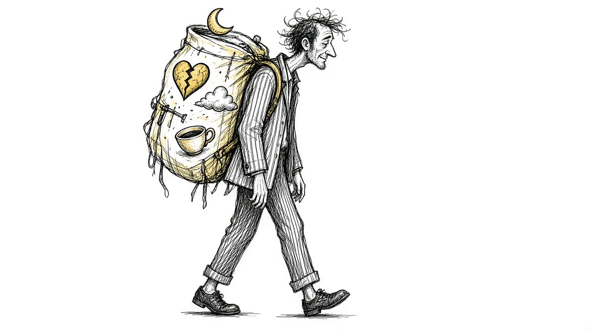

Grief Symptoms: More Than Just Crying

When someone dies, people expect you to be sad. What nobody tells you is that grief can feel like the flu, like a concussion, or like a low hum of panic that will not turn off. If you have been wondering whether something is wrong with you, this guide is for you. Almost certainly, nothing is wrong. You are grieving.
Physical symptoms
Grief is a full-body event. Common physical signs include:
- Fatigue that sleep does not fix
- Tightness in the chest or throat, sometimes described as a weight
- Changes in appetite, either forgetting to eat or eating constantly
- Headaches, stomach trouble, and muscle tension
- Getting sick more often in the months after a loss
These are real effects of stress on the body. If any of them feel severe, especially chest pain or trouble breathing, see a doctor rather than assuming it is only grief.
Thinking and memory
Many grieving people feel like their brain is running on half power. You might walk into a room and forget why, reread the same email five times, or lose track of conversations. This is sometimes called grief brain. It is extremely common and usually eases with time. Be gentle with yourself about deadlines and decisions during this period.
Emotional symptoms beyond sadness
Grief carries a surprising range of feelings: anger at the person who died, at doctors, at God, or at people who still have their mothers. Guilt about things said or unsaid. Relief, especially after a long illness, followed by guilt about the relief. Anxiety about your own mortality or about losing someone else. Numbness that makes you worry you did not love them enough. All of these belong to grief.
Behavioral changes
You may find yourself searching for them in crowds, calling their number, keeping their voicemail, avoiding their room, or spending hours in it. Some people withdraw from friends. Others cannot stand to be alone. Sleep often goes sideways. None of these on its own is a warning sign. They are the mind trying to reconcile a world where that person is missing.
The symptoms that come later
Grief often hits again at moments you do not expect: the first holiday, a song in a store, the date on a form. These grief waves can feel like starting over. They are not. They are part of how grief moves.
When symptoms need attention
Reach out for professional support if, after many months, you cannot manage basic daily life, you are relying on alcohol or drugs to cope, or you feel that life is not worth living. If you are thinking about suicide, call or text 988 right now.
Keeping track helps
Noticing what grief looks like for you, on which days and around which memories, can make it feel less chaotic. Some people jot notes on their phone. Others use a journal or an app. The goal is not to fix grief. It is to understand your own version of it.
This article is for general information and support. It is not medical or mental health advice. If grief has become unbearable or you are thinking about harming yourself, call or text 988 right now.
Related reading

Grief Alongside Depression and Anxiety
Grief often arrives alongside other mental health challenges. How to recognize overlap and get support for all of it.

Why Your Brain Keeps Replaying Their Last Days
Memories of the final days or moments can loop relentlessly. Here is why that happens and how to let the rest of their life back in.

Rumination in Grief: Getting Off the "What If" Wheel
Endless what-ifs and if-onlys can trap grieving people. Learn why rumination happens and gentle ways to step off the wheel.